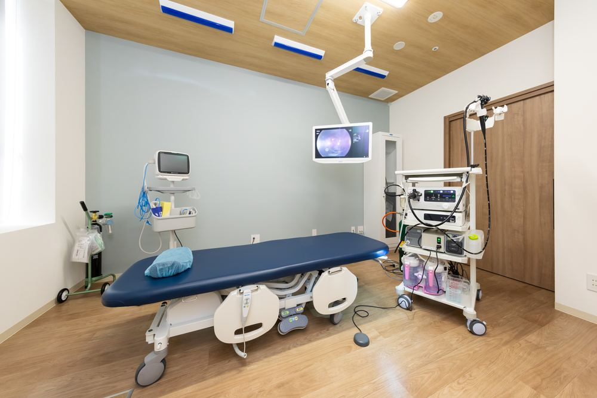


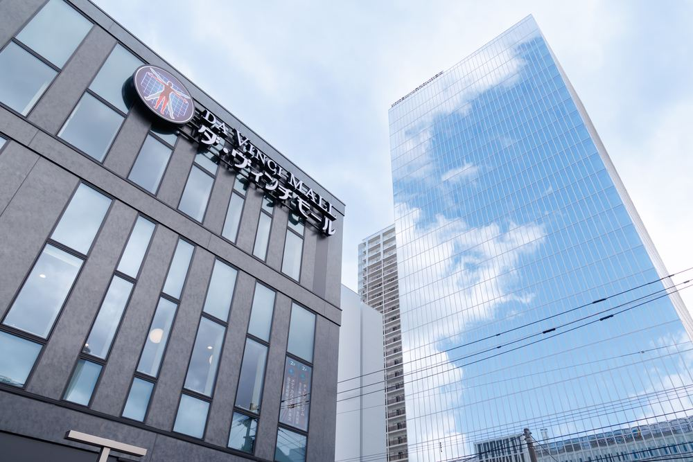


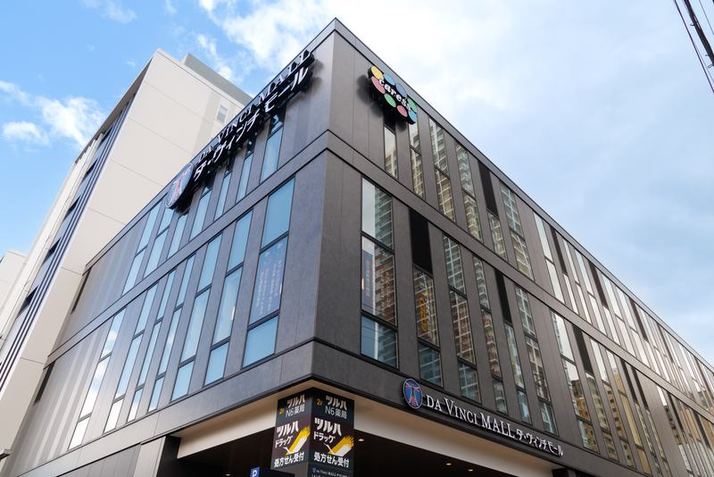
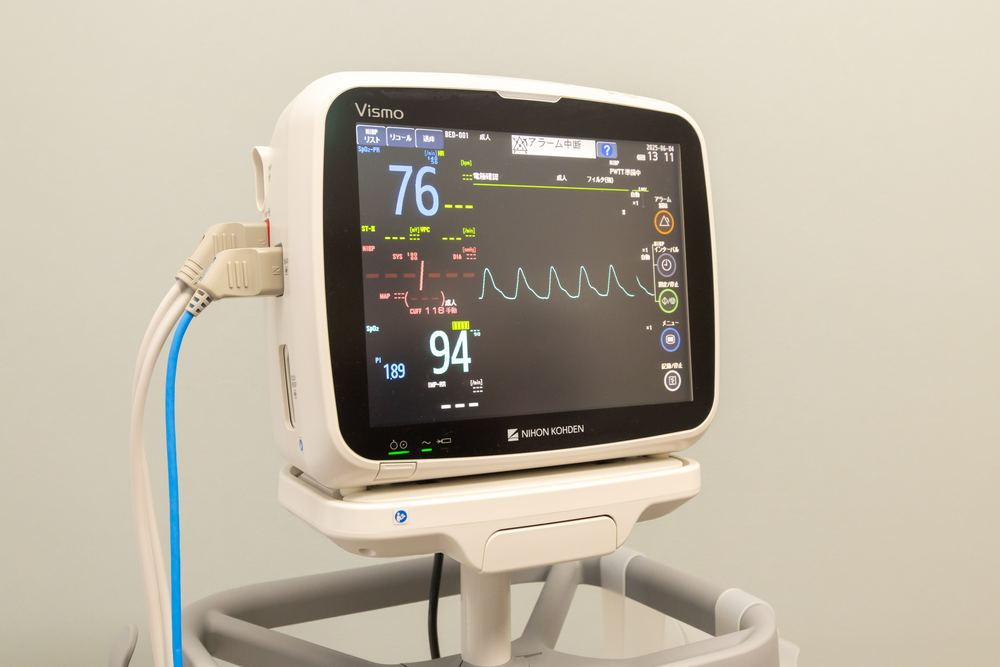


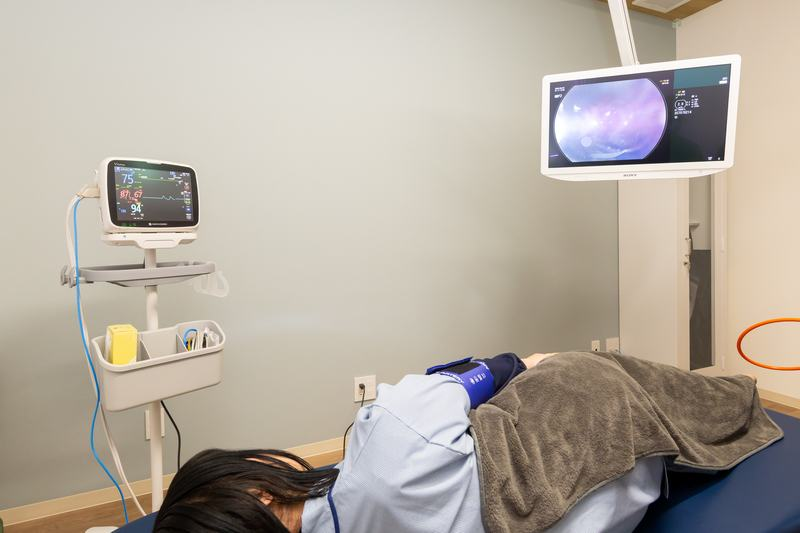


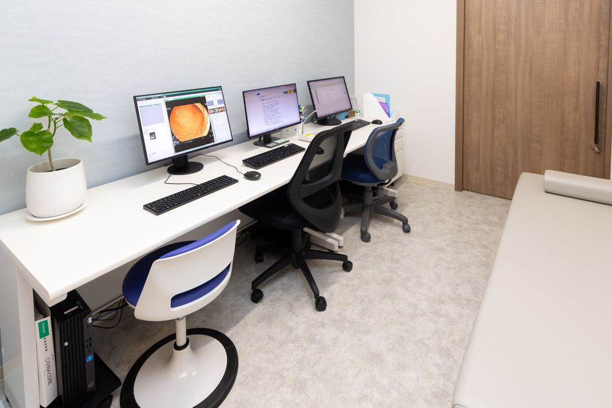
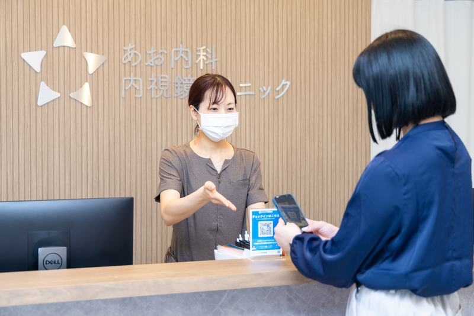

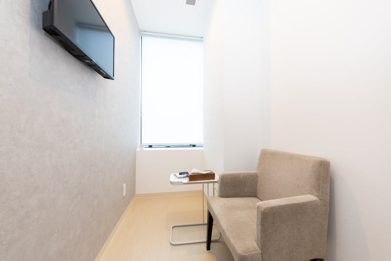
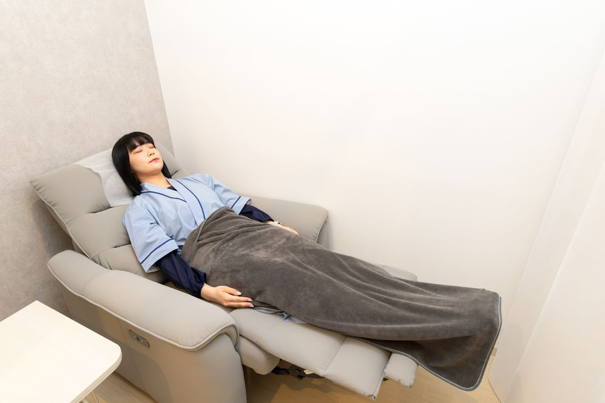


内視鏡検査を、
もっと身近に。
札幌駅から徒歩7分 あお内科・内視鏡クリニック
胃や大腸のがんは、
早く見つけるほど、
治療の選択肢が広がります。
「つらそう」「時間がない」で、検査を先延ばしにしないために。
受けやすさを考えて、検査の方法から院内の過ごし方まで整えました。
よくある不安と、あお内科の方法
胃と大腸で、2回も通う時間がない
胃カメラと大腸カメラを、同じ日に。
2つの検査を続けて受けられます。準備も通院も1回で済み、土曜日の検査にも対応しています。
たくさんの下剤を飲むのがつらい
下剤を飲まない大腸カメラも。
胃カメラの検査中に、内視鏡から腸へ直接下剤を入れる方法を選べます。
※胃カメラと同じ日に受ける場合の方法です。年齢や体の状態によっては、通常どおり下剤を飲む方法でご案内します。検査が苦しそうで、こわい
鎮静剤で、眠っているような状態に。
緊張や不安をやわらげた状態で検査を受けていただけます。「あっという間に終わった」と感じていただける検査を目指しています。
※鎮静剤を使った当日は、車・バイク・自転車の運転はできません。おしりの悩みも、ついでに相談したい
大腸カメラと同時に、肛門の診療も。
大腸の検査のときに、あわせて肛門の診療を受けられます。
何かあったとき、大きな病院に行けるか心配
となりのカレス記念病院と連携。
詳しい検査や継続した治療が必要なときは、となりのカレス記念病院へスムーズにご紹介します。
胃と大腸は、1日で。
下剤は、飲まない方法も。※1
結果は、当日に。※2
札幌駅から、7分。
※1 胃カメラと同じ日に受ける場合に選べる方法です。75歳以上の方、腸の手術を受けたことのある方、大腸カメラだけを受ける方は、ご自宅で下剤を飲んでから来院いただきます。
※2 組織の検査（生検）を行った場合、その結果は後日のご説明になります。
こんなときは、
一度ご相談ください。
ひとつでも当てはまれば、検査を考えるタイミングです。症状がなくても受けられます。
- 健診で「便潜血陽性」と言われた
- 胃の痛みや胃もたれが続いている
- 40歳を過ぎて、大腸カメラを受けたことがない
- 家族に胃がん・大腸がんになった人がいる
- ピロリ菌を指摘されたことがある
- 便に血が混じる、便通が変わった
- 以前の内視鏡検査がつらくて、足が遠のいている
- 健診の「要精密検査」を、そのままにしている
安心して受けていただくために
検査そのものだけでなく、来院から帰るまでの過ごし方も、負担が少なくなるように整えています。
個室の前処置室
人目を気にせず、検査の準備ができます。
個室のリカバリー室
検査のあとは、リクライニングチェアで休めます。
画像を見ながら説明
検査の画像を一緒に見ながら、結果をお伝えします。
血液検査は当日に結果説明
多くの項目で、受診当日に結果をご説明します（一部の特殊な検査を除く）。
予約から会計までスマホで
WEB予約・WEB問診で、待ち時間を短くします。
札幌駅から徒歩7分、土曜日も検査
ダ・ヴィンチモール2階。地下駐車場は1時間無料です。
見つけにくい病変も、
見逃さないために。
AIを搭載した富士フイルムの内視鏡システムを使っています。
- AI（CAD EYE）AIが病変の「発見」と「鑑別」をサポート。医師とAIのダブルチェックで検査します。
- LCIわずかな色の違いを強調し、見逃されやすい平らな病変も見つけやすくします。
- BLI細かな構造をくっきり映し出し、病変の性質をより正確に見きわめます。
- ポリープ切除切除できるポリープは、検査中にその場で切除します。
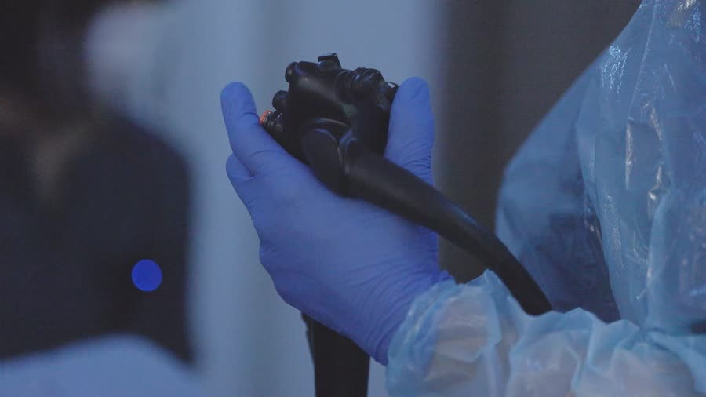
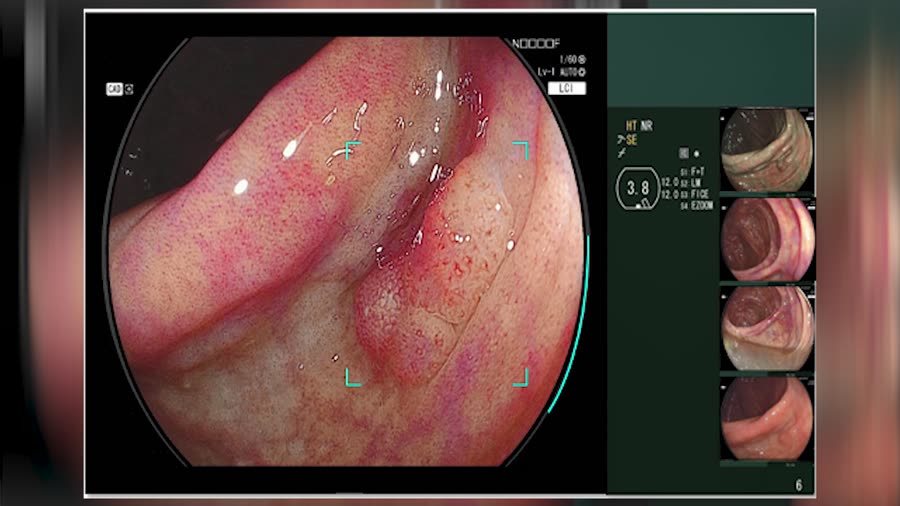
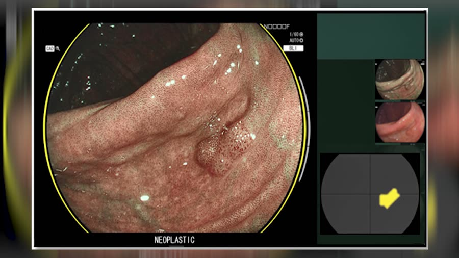
検査当日の流れ
胃カメラと大腸カメラを同じ日に、鎮静剤を使って受ける場合の例です。
朝に来て、お昼すぎには帰れます。
来院・受付
WEB問診を済ませておけば、受付はスマホのQRコードを読み込むだけ。書くものはほとんどありません。
前処置室で準備
個室で検査着に着替え、鎮静剤のための点滴の針を入れます。胃の泡を消すお薬を飲みます。
胃カメラ
鎮静剤でうとうとした状態で検査します。下剤を飲まない方法では、このとき内視鏡から腸へ直接下剤を入れます。
腸がきれいになるのを待つ
個室のリクライニングチェアで休みながら、下剤が腸に行きわたるのを待ちます。
大腸カメラ
鎮静剤を追加して、大腸を観察します。切除できるポリープがあれば、その場で切除します。
リカバリー室で休憩
鎮静剤が落ち着くまで、個室で約1時間休みます。
結果の説明・帰宅
検査の画像を一緒に見ながら、医師が結果をご説明します。会計はスマホの自動精算も使えます。
※時間は目安です。検査の内容や混み具合で前後します。鎮静剤を使った日は、車・バイク・自転車の運転はできません。
※下剤を飲む方法の場合は、朝ご自宅で下剤を飲み、腸がきれいになってから来院します。胃カメラは来院後に行います。
院長
青木 泰孝医学博士／日本外科学会 外科専門医
勤務医として、消化器外科の手術と救急の現場に長く立ってきました。そこで何度も目にしたのが、「もう少し早く見つかっていれば」という場面です。胃がんも大腸がんも、早く見つかれば身体への負担の少ない治療で済むことの多い病気です。
検査が「つらいもの」だから、足が遠のく。その入口のハードルを下げることが、このクリニックの役割だと考えています。鎮静剤も、下剤を飲まない方法も、同じ日の検査も、すべては受けていただくための工夫です。
- 経歴
- 琉球大学医学部 卒業
東北大学大学院 修了（医学博士）
手稲渓仁会病院、東北大学病院 総合外科・高度救命救急センター、帯広第一病院、札幌中央病院で消化器外科医として勤務
2025年5月 あお内科・内視鏡クリニック 開院 - 資格
- 日本外科学会 外科専門医／医学博士／産業医
- 所属学会
- 日本消化器内視鏡学会、日本消化器病学会、日本大腸肛門病学会、日本肝臓学会、日本ヘリコバクター学会 ほか
よくある質問
胃カメラや大腸カメラは痛いですか？
鎮静剤を使い、うとうとした状態で受けていただけます。苦痛をまったくゼロにすることは難しいのですが、できるだけ少なくするための工夫を重ねています。
鎮静剤を使った日は、仕事や運転ができますか？
検査のあと約1時間休んでからお帰りいただけますが、その日は車・バイク・自転車の運転はできません。公共交通機関やご家族の送迎でお越しください。
検査の結果はいつわかりますか？
検査の画像を一緒に見ながら、その日のうちに医師がご説明します。組織を採って調べる検査（生検）をした場合、その結果は後日のご説明になります。
初めてでも、その日に胃カメラを受けられますか？
食事と服薬の状況が確認できれば、診察当日の胃カメラも可能です。大腸カメラは前日の食事や下剤の準備があるため、原則として事前の診察が必要です。
大腸カメラの前日は、何を食べればいいですか？
消化のよい、残りかすの少ない食事をおすすめしています。ご希望の方には、専用の検査食もご案内しています。
下剤を飲まない方法は、誰でも受けられますか？
胃カメラと同じ日に受ける場合に選べる方法です。75歳以上の方、腸の手術を受けたことのある方、大腸カメラだけを受ける方は、ご自宅で下剤を飲んでから来院いただく通常の方法になります。どちらの方法でも、検査そのものは鎮静剤を使って受けられます。
健診で便潜血が陽性でした。大腸カメラは必要ですか？
ポリープや腫瘍が隠れている可能性があるため、精密検査として大腸カメラをおすすめしています。症状がなくても、一度ご相談ください。
ポリープが見つかったら、どうなりますか？
切除できるものは検査中にその場で切除します（日帰り）。大きなポリープや、より詳しい検査が必要な場合は、となりのカレス記念病院へご紹介します。
検査のこと、
まずはお気軽にご相談ください。
お電話 8:30〜12:30 / 14:00〜18:00（日・祝休診）
診療時間
| 月 | 火 | 水 | 木 | 金 | 土 | 日 | |
|---|---|---|---|---|---|---|---|
| 8:30〜12:30 | ◎ | ● | ● | ● | ● | ● | ─ |
| 14:00〜18:00 | ◎ | ● | ● | ● | ● | ● | ─ |
◎月曜は 9:00〜12:00 / 13:00〜17:00
内視鏡検査は 12:00〜14:00 も行っています
休診日：日曜・祝日
アクセス
- 住所
- 〒060-0906 札幌市東区北6条東3丁目1-1
ダ・ヴィンチモール2階 - 電車
- JR札幌駅から徒歩7分
- 目印
- カレス記念病院のとなり